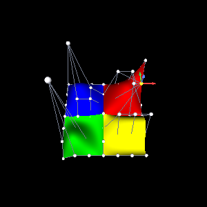

Scenegraph Nodes: Editing a NURBS Surface
#! /usr/bin/env python
from molehill import TestContext as BaseContext
from OpenGLContext.edit.controlnet import ControlNet
from OpenGLContext.edit.gizmo import TranslationGizmo
from OpenGLContext.scenegraph.nurbs import NurbsSurface
class TestContext( BaseContext ):
"""The Molehill surfaces, with draggable control points"""
Further back than the Molehill view, because we are now looking at the
control net rather than at the surfaces. Two of Molehill's control points
are pulled far above the geometry they raise -- the one that "pulls hard on
a single middle square" stands at fifteen units over a surface six high --
and a control point you cannot see is one you cannot click.
initialPosition = (0, 1, 14)
How long a gizmo arm is, in the control points' own units. The hills
are twelve units across, so two is long enough to aim at and short enough
not to hide what it is moving.
GIZMO_SIZE = 2.0
def OnInit( self ):
"""Build the Molehill scene, then make its control points editable"""
The parent fills in self.sg and self.shapes; everything below
adds to what it built.
super( TestContext, self ).OnInit()
print("""Click a control point to select it, then drag one of the
three coloured arms to move it. Escape abandons a drag.""")
One net per surface. A net reads and writes the node's
controlPoint field, so this is the whole of the coupling between the
editor and the geometry.
self.nets = [
ControlNet( shape.geometry )
for shape in self.shapes
if isinstance( shape.geometry, NurbsSurface )
]
One gizmo serves all four surfaces: only one control point is being
moved at a time, so there is only ever one handle to draw.
self.gizmo = TranslationGizmo( size = self.GIZMO_SIZE )
Which net, and which of its control points, is being worked on.
self.selection = None
The nets and the handle join the surfaces *inside the scene's own
transform*, which is what lets any of this be written in the control
points' units. The scene is scaled and turned before it is drawn, and
a gizmo takes that transform from the node path the pick hands it --
so a drag measured in pixels comes back as a distance in the units the
control point is stored in.
group = self.sg.children[0]
group.children = list( group.children ) + [
net.node for net in self.nets
] + [ self.gizmo.node ]
A press either grabs an arm or chooses a control point, a move with
the button down drags whatever the press grabbed, and the release lets
go. Mouse moves reach a context only while something is registered for
them, so the drag handler is also what switches move-picking on.
self.addEventHandler(
"mousebutton", button = 0, state = 1, function = self.OnPress )
self.addEventHandler(
"mousebutton", button = 0, state = 0, function = self.OnRelease )
self.addEventHandler(
"mousemove", buttons = (0,), function = self.OnDrag )
self.addEventHandler(
"keyboard", name = "<escape>", state = 1, function = self.OnCancel )
def OnPress( self, event ):
"""Grab an arm of the handle, or choose the control point under the cursor"""
paths = event.getObjectPaths()
The gizmo is asked first. Its arms stand at the point they are
moving and in front of the marker for it, so a press that landed on an
arm is never a press on the point behind it -- and a press it cannot
start a drag from, because the pointer is edge-on to the arm, is still
not a press on anything else.
if self.gizmo.axis_for( paths ) is not None:
self.gizmo.press( event )
return
for net in self.nets:
index = net.index_for( paths )
if index is not None:
return self.OnSelect( net, index )
A press on anything else -- a surface, or the background -- puts the
handle away, which is how a designer stops editing.
return self.OnSelect( None, None )
def OnSelect( self, net, index ):
"""Work on one control point, or on none"""
if self.selection is not None:
self.selection[0].deselect()
if net is None:
self.selection = None
self.gizmo.detach()
else:
self.selection = ( net, index )
net.select( index )
The handle stands *on* the point, in the same coordinates the
point is written in, because both nodes are in the same group.
self.gizmo.attach( net.point( index ) )
self.triggerRedraw( 1 )
def OnDrag( self, event ):
"""Move the selected control point to where the pointer has taken it"""
The gizmo answers None for a drag it is not part of -- no arm held,
or the pointer edge-on to the one that is and saying nothing about where
along it to go.
moved = self.gizmo.drag( event )
if moved is None or self.selection is None:
return
net, index = self.selection
Assigning the field is what retessellates the surface: the cached
geometry depends on controlPoint, so the new hill is built for the
next frame.
net.move( index, moved )
self.triggerRedraw( 1 )
def OnRelease( self, event ):
"""Let go of the arm, leaving the point where the drag left it"""
self.gizmo.release()
def OnCancel( self, event ):
"""Escape: abandon a drag part-way, or put the handle away"""
if self.gizmo.dragging is not None and self.selection is not None:
net, index = self.selection
net.move( index, self.gizmo.cancel() )
self.triggerRedraw( 1 )
else:
self.OnSelect( None, None )
if __name__ == "__main__":
TestContext.ContextMainLoop()
Editing a NURBS Surface
